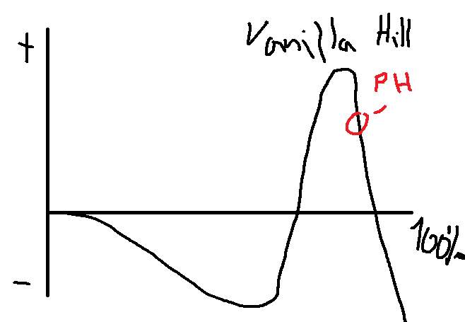

1. Gør rede for Mori's model for Uncanny Valley
2. Relater modellen til robotter af fx Ishiguro, Hanson Robotics og Dash & Dot
Menneskelign. imitationsrobot
Menneskelign. interaktions Ekspert
Legetøj til læring
Vaskeægte Gynoid/Humanoid
Menneskelighed, tilhørsforhold & forventning
